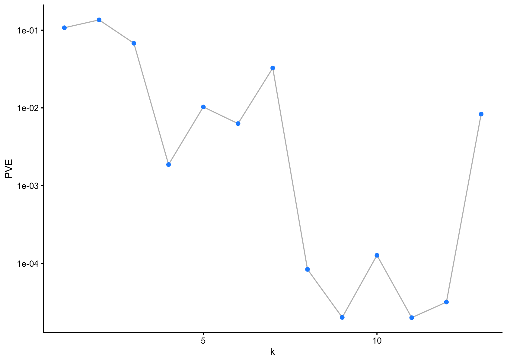
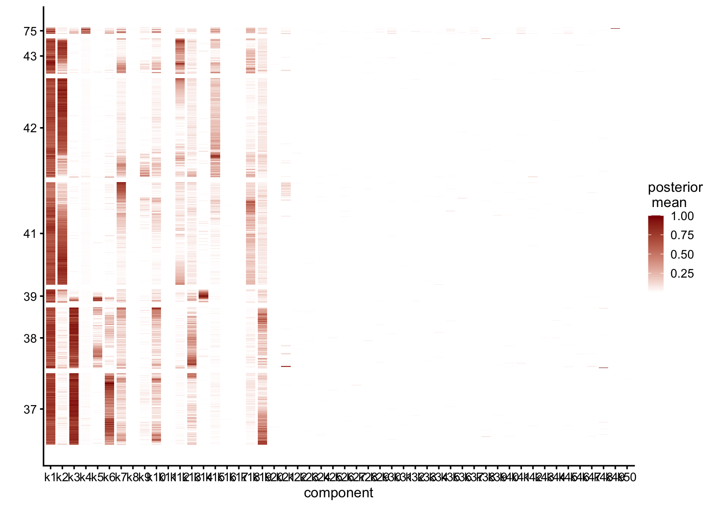
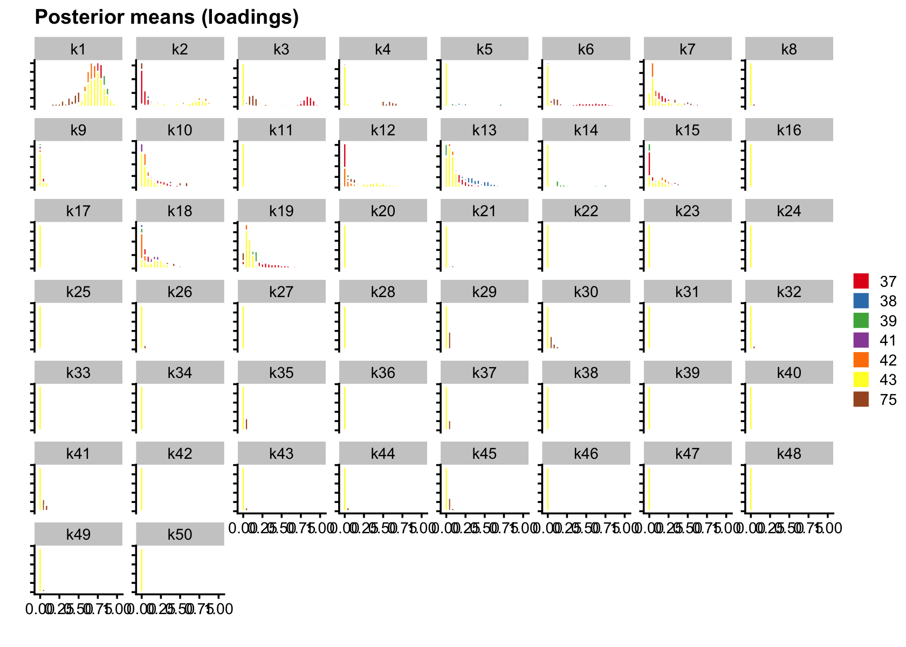

Initial exploration of the human brain dataset: committed OPC cells
Junming Guan
Last updated: 2024-11-09
Checks: 7 0
Knit directory:
single-cell-jamboree/analysis/
This reproducible R Markdown analysis was created with workflowr (version 1.7.1). The Checks tab describes the reproducibility checks that were applied when the results were created. The Past versions tab lists the development history.
Great! Since the R Markdown file has been committed to the Git repository, you know the exact version of the code that produced these results.
Great job! The global environment was empty. Objects defined in the global environment can affect the analysis in your R Markdown file in unknown ways. For reproduciblity it’s best to always run the code in an empty environment.
The command set.seed(1) was run prior to running the
code in the R Markdown file. Setting a seed ensures that any results
that rely on randomness, e.g. subsampling or permutations, are
reproducible.
Great job! Recording the operating system, R version, and package versions is critical for reproducibility.
Nice! There were no cached chunks for this analysis, so you can be confident that you successfully produced the results during this run.
Great job! Using relative paths to the files within your workflowr project makes it easier to run your code on other machines.
Great! You are using Git for version control. Tracking code development and connecting the code version to the results is critical for reproducibility.
The results in this page were generated with repository version e8fc53f. See the Past versions tab to see a history of the changes made to the R Markdown and HTML files.
Note that you need to be careful to ensure that all relevant files for
the analysis have been committed to Git prior to generating the results
(you can use wflow_publish or
wflow_git_commit). workflowr only checks the R Markdown
file, but you know if there are other scripts or data files that it
depends on. Below is the status of the Git repository when the results
were generated:
Untracked files:
Untracked: .DS_Store
Untracked: analysis/.DS_Store
Untracked: analysis/.Rhistory
Untracked: analysis/human_brain_COP_cells_fit.RData
Untracked: code/read_gene_set_data.R
Untracked: data/.DS_Store
Untracked: data/.Rhistory
Untracked: data/Homo_sapiens.gene_info.gz
Untracked: data/human_brain_COP_cells.rds
Untracked: data/human_brain_COP_cells_fit.RData
Untracked: data/human_brain_COP_cells_fit_protein_coding.RData
Unstaged changes:
Deleted: data/human_brain_OPC_cells.rds
Note that any generated files, e.g. HTML, png, CSS, etc., are not included in this status report because it is ok for generated content to have uncommitted changes.
These are the previous versions of the repository in which changes were
made to the R Markdown (analysis/human_brain_COP_cells.Rmd)
and HTML (docs/human_brain_COP_cells.html) files. If you’ve
configured a remote Git repository (see ?wflow_git_remote),
click on the hyperlinks in the table below to view the files as they
were in that past version.
| File | Version | Author | Date | Message |
|---|---|---|---|---|
| Rmd | e8fc53f | junmingguan | 2024-11-09 | workflowr::wflow_publish("human_brain_COP_cells.Rmd") |
TODO: UMAP by factors
Introduction
This single-nucleus RNA seq dataset is from the paper “Transcriptomic diversity of cell types across the adult human brain” (Siletti, 2023). around 3 millions nuclei were collected from around 100 dissections from the following areas of brains of 3 donors:
Forebrain:
cerebral cortex
cerebral nuclei
hypothalamus
hippocampus formation
thalamus complex
Midbrain
Hindbrain:
pons
cerebellum
Myelencephalon (Medulla)
Spinal cord
The authors performed hierarchical graph-based clustering, grouping the cells into superclusters, clusters, and subclusters. The data can be accessed here, with files organized by supercluster or by dissection.
This exploratory analysis focuses on committed oligodendrocyte precursor (COP) cells (see https://cellxgene.cziscience.com/e/f16f4108-7873-4035-9989-3748da1a7ff1.cxg/). There are 4,720 cells and 2,1462 genes (after QC) in the dataset.
library(Matrix)
# library(MatrixExtra)
library(flashier)
library(fastTopics)
library(ggplot2)
library(cowplot)
library(dplyr)
library(readr)Load data and fit
# Taken from https://github.com/stephenslab/pathways/blob/master/inst/code/read_gene_set_data.R
read_gene_info <- function (file) {
# Read the data into a data frame.
out <- suppressMessages(read_delim(file,delim = "\t",col_names = TRUE))
class(out) <- "data.frame"
dbXrefs <- out$dbXrefs
out <- out[c("GeneID","Symbol","Synonyms","chromosome")]
# Set any entries with a single hyphen to NA, and convert the
# "chromosome" column to a factor.
out$chromosome[out$chromosome == "-"] <- NA
out$Synonyms[out$Synonyms == "-"] <- NA
dbXrefs[dbXrefs == "-"] <- NA
out <- transform(out,chromosome = factor(chromosome))
# Extract the Ensembl ids. Note that a small number of genes map to
# more than one Ensembl id; in those cases, we retain the first
# Ensembl id only.
dbXrefs <- strsplit(dbXrefs,"|",fixed = TRUE)
out$Ensembl <- sapply(dbXrefs,function (x) {
i <- which(substr(x,1,8) == "Ensembl:")
if (length(i) > 0)
return(substr(x[i[1]],9,nchar(x[i[1]])))
else
return(as.character(NA))
})
# For human genes, extract the HGNC (HUGO Gene Nomenclature
# Committee) ids.
out$HGNC <- sapply(dbXrefs,function (x) {
i <- which(substr(x,1,10) == "HGNC:HGNC:")
if (length(i) > 0)
return(substr(x[i[1]],6,nchar(x[i[1]])))
else
return(as.character(NA))
})
# Return the processed gene data.
return(out)
}
homo_sapien_geno_info <- read_gene_info('../data/Homo_sapiens.gene_info.gz')
data <- readRDS('../data/human_brain_COP_cells.rds')
counts <- t(data$RNA$data)
# Warning: package 'SeuratObject' was built under R version 4.3.3
# Keep only protein-coding genes and remove those without nonzero counts
reduced_counts <-
counts[, colnames(counts) %in% homo_sapien_geno_info$Ensembl]
cols_to_keep <- colSums(reduced_counts != 0, na.rm = TRUE) > 0
reduced_counts <- reduced_counts[, cols_to_keep]
load('../data/human_brain_COP_cells_fit_protein_coding.RData')map_tissue <- function(tissue) {
if (tissue %in% c("cerebral cortex", "cerebral nuclei", "hypothalamus",
"hippocampal formation", "thalamic complex")) {
return("forebrain")
} else if (tissue == "midbrain") {
return("midbrain")
} else if (tissue %in% c("pons", "cerebellum", "myelencephalon")) {
return("hindbrain")
} else if (tissue == "spinal cord") {
return("spinal cord")
} else {
return(NA)
}
}
regions <- sapply(data$tissue, map_tissue)
t-SNE and UMAP
The dataset includes precomputed tSNE and UMAP embeddings, allowing us to plot them directly. We can color the cells by tissue, by region, or by cluster.
t-SNE
# colors <- brewer.pal(length(unique(data$tissue)), "Paired")
colors <- c('#756bb1', '#1c9099', '#d95f0e', '#edf8b1', '#dd1c77', '#636363', '#a1d99b', '#fa9fb5', '#fec44f', '#de2d26')
ggplot(Embeddings(data$tSNE) , aes(x = TSNE_1, y = TSNE_2, color = data$tissue)) +
geom_point(alpha = 0.7) +
labs(title = "t-SNE Plot Colored by Tissue Type", x = "t-SNE 1", y = "t-SNE 2") +
theme_minimal() +
scale_color_manual(values = colors)
# colors <- brewer.pal(length(unique(regions)), "Set1")
# ggplot(Embeddings(data$tSNE) , aes(x = TSNE_1, y = TSNE_2, color = regions)) +
# geom_point(alpha = 0.7) +
# labs(title = "t-SNE Plot Colored by Tissue Type", x = "t-SNE 1", y = "t-SNE 2") +
# theme_minimal() +
# scale_color_manual(values = colors)
# colors <- brewer.pal(length(unique(data$cluster_id)), "Paired")
colors <- c('#756bb1', '#1c9099', '#d95f0e', '#edf8b1', '#dd1c77', '#636363', '#a1d99b')
ggplot(Embeddings(data$tSNE) , aes(x = TSNE_1, y = TSNE_2, color = data$cluster_id)) +
geom_point(alpha = 0.7) +
labs(title = "t-SNE Plot Colored by Cluster", x = "t-SNE 1", y = "t-SNE 2") +
theme_minimal() +
scale_color_manual(values = colors) #### UMAP
#### UMAP
# colors <- brewer.pal(length(unique(data$tissue)), "Paired")
colors <- c('#756bb1', '#1c9099', '#d95f0e', '#edf8b1', '#dd1c77', '#636363', '#a1d99b', '#fa9fb5', '#fec44f', '#de2d26')
ggplot(Embeddings(data$UMAP) , aes(x = UMAP_1, y = UMAP_2, color = data$tissue)) +
geom_point(alpha = 0.7) +
labs(title = "UMAP Plot Colored by Tissue Type", x = "UMAP 1", y = "UMAP 2") +
theme_minimal() +
scale_color_manual(values = colors)
# ggplot(Embeddings(data$UMAP) , aes(x = UMAP_1, y = UMAP_2, color = regions)) +
# geom_point(alpha = 0.7) +
# labs(title = "UMAP Plot Colored by Tissue Type", x = "UMAP 1", y = "UMAP 2") +
# theme_minimal() +
# scale_color_manual(values = rainbow(length(unique(regions))))
# colors <- brewer.pal(length(unique(data$cluster_id)), "Paired")
colors <- c('#756bb1', '#1c9099', '#d95f0e', '#edf8b1', '#dd1c77', '#636363', '#a1d99b')
ggplot(Embeddings(data$UMAP) , aes(x = UMAP_1, y = UMAP_2, color = data$cluster_id)) +
geom_point(alpha = 0.7) +
labs(title = "UMAP Plot Colored by Cluster", x = "UMAP 1", y = "UMAP 2") +
theme_minimal() +
scale_color_manual(values = colors)
Flashier
NMF
Redefine subcluster ids so that the hierarchical structure is clearer
# M <- table(data$subcluster_id, data$cluster_id)
# M
subcluster_id <- as.vector(data$subcluster_id)
subcluster_id[subcluster_id == '3033'] <- '37.1'
subcluster_id[subcluster_id == '3035'] <- '37.2'
subcluster_id[subcluster_id == '3036'] <- '37.3'
subcluster_id[subcluster_id == '3037'] <- '37.4'
subcluster_id[subcluster_id == '3038'] <- '37.5'
subcluster_id[subcluster_id == '3030'] <- '38.1'
subcluster_id[subcluster_id == '3031'] <- '38.2'
subcluster_id[subcluster_id == '3032'] <- '38.3'
subcluster_id[subcluster_id == '3034'] <- '38.4'
subcluster_id[subcluster_id == '3027'] <- '39.1'
subcluster_id[subcluster_id == '3028'] <- '39.2'
subcluster_id[subcluster_id == '3029'] <- '39.3'
subcluster_id[subcluster_id == '3014'] <- '41.1'
subcluster_id[subcluster_id == '3015'] <- '42.2'
subcluster_id[subcluster_id == '3007'] <- '42.1'
subcluster_id[subcluster_id == '3008'] <- '42.2'
subcluster_id[subcluster_id == '3009'] <- '42.3'
subcluster_id[subcluster_id == '3010'] <- '42.4'
subcluster_id[subcluster_id == '3006'] <- '43.1'
subcluster_id[subcluster_id == '3195'] <- '75.1'
subcluster_id[subcluster_id == '3196'] <- '75.2'
subcluster_id <- factor(subcluster_id)flash_plot_scree(flashier_fit)
plot(flashier_fit,
plot_type = "heatmap",
pm_which = "loadings",
pm_groups = data$cluster_id,
gap = 25)
plot(flashier_fit,
plot_type = "histogram",
pm_which = "loadings",
pm_groups = data$cluster_id,
bins = 25)
plot(flashier_fit,
plot_type = "structure",
pm_which = "loadings",
pm_groups = data$cluster_id,
bins = 30, gap = 70)
plot(flashier_fit,
plot_type = "structure",
pm_which = "loadings",
pm_groups = subcluster_id,
bins = 60, gap = 100)vals <- ldf(flashier_fit,type="m")
ncells <- colSums(vals$L>0.1)
ncells
# [1] 4720 3101 1557 79 2060 1641 1281 1 5 1 4 2 1795Several factors are load on only a small number of cells.
Removing those factors from the structure plots:
plot(flashier_fit,
kset = which(ncells > 5),
plot_type = "structure",
pm_which = "loadings",
pm_groups = data$cluster_id,
bins = 30, gap = 70)
plot(flashier_fit,
kset = which(ncells > 5),
plot_type = "structure",
pm_which = "loadings",
pm_groups = subcluster_id,
bins = 60, gap = 100)Showing those factors in the structure plots:
plot(flashier_fit,
kset = which(ncells <= 5),
plot_type = "structure",
pm_which = "loadings",
pm_groups = data$cluster_id,
bins = 30, gap = 70)
plot(flashier_fit,
kset = which(ncells <= 5),
plot_type = "structure",
pm_which = "loadings",
pm_groups = subcluster_id,
bins = 60, gap = 100)UMAP by factor
# library(gridExtra)
# plot_list <- list()
# i <- 1
# for (f in 1:flashier_fit$n_factors) {
# plot_list[[i]] <-
# ggplot(Embeddings(data$UMAP) , aes(x = UMAP_1, y = UMAP_2, size = vals$L[,f])) +
# geom_point(alpha = 0.7) +
# labs(title = paste("factor ", f) , x = "UMAP 1", y = "UMAP 2") +
# theme_minimal() +
# scale_color_manual(values = '#f0f0f0')
# i <- i + 1
# }
# grid.arrange(grobs=plot_list)Semi-NMF
flash_plot_scree(flashier_fit_semi)
plot(flashier_fit_semi,
plot_type = "heatmap",
pm_which = "loadings",
pm_groups = data$cluster_id,
gap = 25)
plot(flashier_fit_semi,
plot_type = "histogram",
pm_which = "loadings",
pm_groups = data$cluster_id,
bins = 25)
plot(flashier_fit_semi,
plot_type = "structure",
pm_which = "loadings",
pm_groups = data$cluster_id,
bins = 30, gap = 70)
plot(flashier_fit_semi,
plot_type = "structure",
pm_which = "loadings",
pm_groups = subcluster_id,
bins = 60, gap = 100)vals_semi <- ldf(flashier_fit_semi, type="m")
ncells_semi <- colSums(vals_semi$L>0.1)
ncells_semi
# [1] 4720 3121 1700 3 559 1208 769 1 324 2350 1 1469 1799 177 1591
# [16] 1 1 1838 1886 3 68 1 2 1 3 1 2 5 2 1
# [31] 1 2 1 1 54 1 5 1 1 1 2 2 1 1 59
# [46] 2 2 3 1 3Several factors are load on only a small number of cells.
Removing those factors from the structure plots:
plot(flashier_fit_semi,
kset = which(ncells_semi > 5),
plot_type = "structure",
pm_which = "loadings",
pm_groups = data$cluster_id,
bins = 30, gap = 70)
plot(flashier_fit_semi,
kset = which(ncells_semi > 5),
plot_type = "structure",
pm_which = "loadings",
pm_groups = subcluster_id,
bins = 60, gap = 100)Showing factors that are only loaded on a small number of cells:
plot(flashier_fit_semi,
kset = which(ncells_semi <= 5),
plot_type = "structure",
pm_which = "loadings",
pm_groups = data$cluster_id,
bins = 30, gap = 70)
plot(flashier_fit_semi,
kset = which(ncells_semi <= 5),
plot_type = "structure",
pm_which = "loadings",
pm_groups = subcluster_id,
bins = 60, gap = 100)Comparison
plot(flashier_fit,
kset = which(ncells > 5),
plot_type = "structure",
pm_which = "loadings",
pm_groups = data$cluster_id,
bins = 30, gap = 70)
plot(flashier_fit_semi,
kset = which(ncells_semi > 5),
plot_type = "structure",
pm_which = "loadings",
pm_groups = data$cluster_id,
bins = 30, gap = 70)
# plot_grid(p1, p2, ncol = 1, align = "v", axis = "lr", rel_heights = c(1, 1))FastTopics
plot_progress(fasttopics_fit,x = "iter",add.point.every = 10,colors = "black") +
theme_cowplot(font_size = 10)
loglik <- loglik_multinom_topic_model(reduced_counts, fasttopics_fit)
pdat <- data.frame(loglik)
ggplot(pdat,aes(loglik)) +
geom_histogram(bins = 64,color = "white",fill = "black",size = 0.25) +
labs(y = "number of cells") +
theme_cowplot(font_size = 10)
# Warning: Using `size` aesthetic for lines was deprecated in ggplot2 3.4.0.
# ℹ Please use `linewidth` instead.
# This warning is displayed once every 8 hours.
# Call `lifecycle::last_lifecycle_warnings()` to see where this warning was
# generated.
# subpop_colors <- c("dodgerblue","forestgreen","darkmagenta","skyblue","gold", )
subpop_colors <- c("red", "blue", "green", "purple", "orange", "pink", "cyan", "brown", "yellow", "darkgreen")
pdat <- data.frame(loglik = loglik,subpop = data$tissue)
ggplot(pdat,aes(x = loglik,fill = subpop)) +
geom_histogram(bins = 64,color = "white",size = 0.25) +
scale_fill_manual(values = subpop_colors) +
labs(y = "number of cells") +
theme_cowplot(font_size = 10)
structure_plot(fasttopics_fit, grouping = data$cluster_id, gap = 70)
structure_plot(fasttopics_fit, grouping = subcluster_id, gap = 70)
ncells_ft <- colSums(fasttopics_fit$L>0.1)
ncells_ft
# k1 k2 k3 k4 k5 k6 k7 k8 k9 k10 k11 k12 k13 k14 k15 k16
# 127 97 876 156 1019 115 405 12 171 112 1734 315 141 20 112 35
# k17 k18 k19 k20 k21 k22 k23 k24 k25 k26 k27 k28 k29 k30 k31 k32
# 46 65 143 484 322 281 1008 127 66 347 107 128 38 612 517 202
# k33 k34 k35 k36 k37 k38 k39 k40 k41 k42 k43 k44 k45 k46 k47 k48
# 196 148 877 24 70 28 204 370 259 189 58 44 120 402 72 433
# k49 k50
# 22 313No factors that are loaded on a single cells. Still there are a couple that are loaded on a small number of cells, e.g., k8.
GBCD
TODO
# source("../code/fit_cov_ebnmf.R")
#
# fit.gbcd <-
# flash_fit_cov_ebnmf(Y = reduced_counts, Kmax = 7,
# prior = flash_ebnm(prior_family = "generalized_binary",
# scale = 0.04),
# extrapolate = FALSE)
sessionInfo()
# R version 4.3.1 (2023-06-16)
# Platform: aarch64-apple-darwin20 (64-bit)
# Running under: macOS Sonoma 14.5
#
# Matrix products: default
# BLAS: /Library/Frameworks/R.framework/Versions/4.3-arm64/Resources/lib/libRblas.0.dylib
# LAPACK: /Library/Frameworks/R.framework/Versions/4.3-arm64/Resources/lib/libRlapack.dylib; LAPACK version 3.11.0
#
# locale:
# [1] en_US.UTF-8/en_US.UTF-8/en_US.UTF-8/C/en_US.UTF-8/en_US.UTF-8
#
# time zone: America/Chicago
# tzcode source: internal
#
# attached base packages:
# [1] stats graphics grDevices utils datasets methods base
#
# other attached packages:
# [1] SeuratObject_5.0.2 sp_2.1-4 readr_2.1.4 dplyr_1.1.4
# [5] cowplot_1.1.3 ggplot2_3.5.1 fastTopics_0.6-192 flashier_1.0.54
# [9] ebnm_1.1-34 Matrix_1.6-4
#
# loaded via a namespace (and not attached):
# [1] pbapply_1.7-2 rlang_1.1.4 magrittr_2.0.3
# [4] git2r_0.35.0 horseshoe_0.2.0 compiler_4.3.1
# [7] vctrs_0.6.5 quadprog_1.5-8 stringr_1.5.1
# [10] pkgconfig_2.0.3 crayon_1.5.3 fastmap_1.2.0
# [13] labeling_0.4.3 utf8_1.2.4 promises_1.3.0
# [16] rmarkdown_2.28 tzdb_0.4.0 purrr_1.0.2
# [19] bit_4.0.5 xfun_0.48 cachem_1.1.0
# [22] trust_0.1-8 jsonlite_1.8.9 progress_1.2.3
# [25] highr_0.11 later_1.3.2 irlba_2.3.5.1
# [28] parallel_4.3.1 prettyunits_1.2.0 R6_2.5.1
# [31] bslib_0.8.0 stringi_1.8.4 RColorBrewer_1.1-3
# [34] SQUAREM_2021.1 parallelly_1.38.0 jquerylib_0.1.4
# [37] Rcpp_1.0.13 knitr_1.48 future.apply_1.11.3
# [40] httpuv_1.6.14 splines_4.3.1 tidyselect_1.2.1
# [43] rstudioapi_0.15.0 yaml_2.3.10 codetools_0.2-19
# [46] listenv_0.9.1 lattice_0.21-8 tibble_3.2.1
# [49] withr_3.0.2 evaluate_1.0.1 Rtsne_0.17
# [52] future_1.34.0 RcppParallel_5.1.9 pillar_1.9.0
# [55] whisker_0.4.1 plotly_4.10.4 softImpute_1.4-1
# [58] generics_0.1.3 vroom_1.6.3 rprojroot_2.0.3
# [61] invgamma_1.1 truncnorm_1.0-9 hms_1.1.3
# [64] munsell_0.5.1 scales_1.3.0 ashr_2.2-63
# [67] gtools_3.9.5 globals_0.16.3 RhpcBLASctl_0.23-42
# [70] glue_1.8.0 scatterplot3d_0.3-44 lazyeval_0.2.2
# [73] tools_4.3.1 data.table_1.16.2 dotCall64_1.2
# [76] fs_1.6.4 grid_4.3.1 tidyr_1.3.1
# [79] colorspace_2.1-1 deconvolveR_1.2-1 cli_3.6.3
# [82] Polychrome_1.5.1 workflowr_1.7.1 spam_2.11-0
# [85] fansi_1.0.6 mixsqp_0.3-54 viridisLite_0.4.2
# [88] uwot_0.1.16 gtable_0.3.6 sass_0.4.9
# [91] digest_0.6.37 progressr_0.14.0 ggrepel_0.9.6
# [94] farver_2.1.2 htmlwidgets_1.6.4 htmltools_0.5.8.1
# [97] lifecycle_1.0.4 httr_1.4.7 bit64_4.0.5